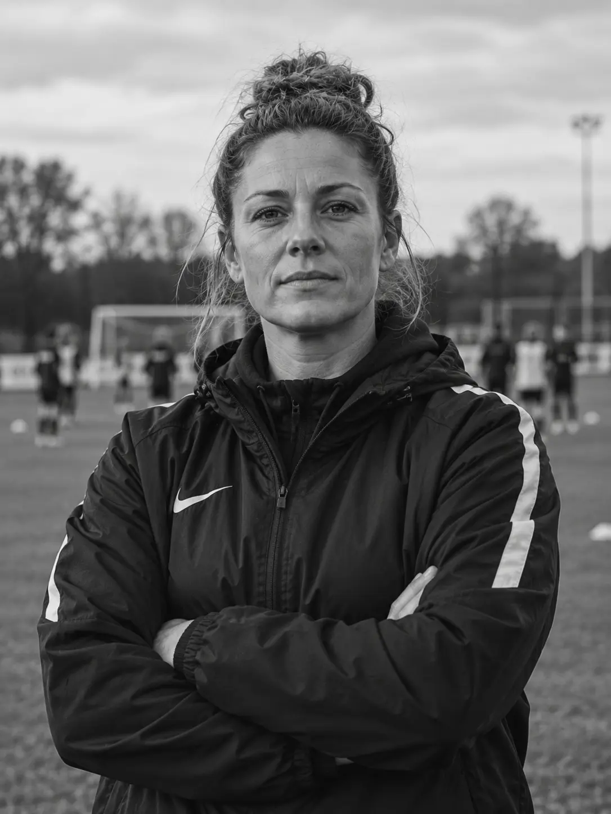
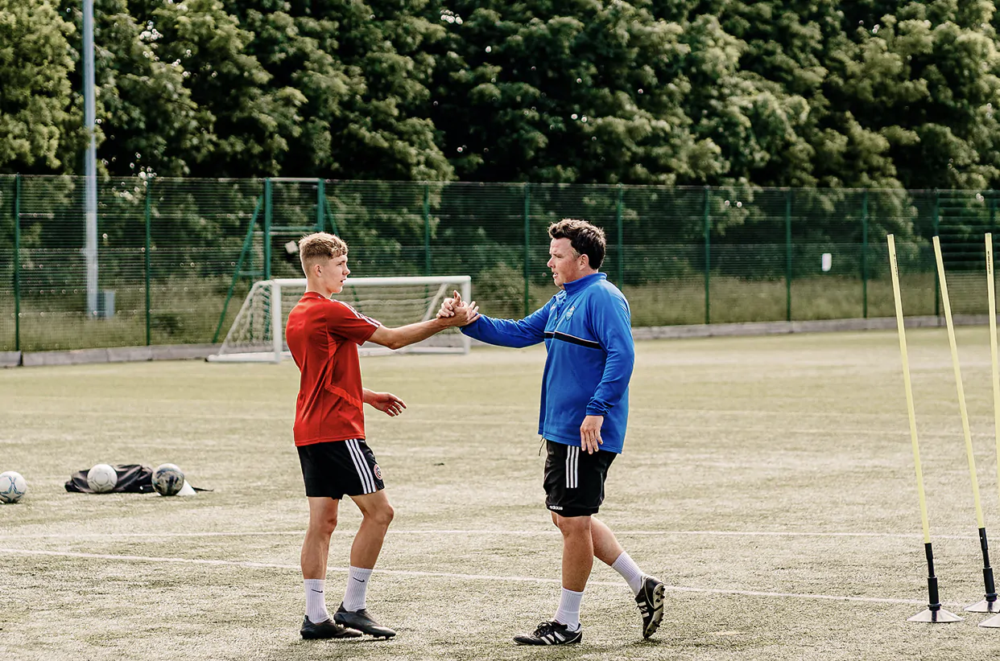

Live online session for committees and chairs
Everycommitteeshapesthe game.
Explore the planned FMHA session for club committees and chairs, run live online and pooled across County FAs for a wider base of experience. Learn to separate conduct from condition, understand Rejection Sensitive Dysphoria, and know what a reasonable adjustment looks like in a volunteer-run club - under one ground rule: nobody, and no County FA, is ever named.

01 / At a glance
The session in
four points.
The people who decide a volunteer's role at the club, from several clubs at once - not coaches, who are supported separately.
The model we're currently planning: one Zoom session for committees from several clubs spanning more than one County FA, 60-75 minutes, one ground rule - nobody is ever named or made identifiable.
Separate conduct from condition, understand RSD, agree what's reasonable in a volunteer context.
Being shaped with County FA partners right now - if something's missing, this is the stage to say so.
02 / A learning moment
Same committee.
Different read.
A volunteer coach has missed the last three sign-in deadlines and reacted sharply to a parent's feedback after Saturday's game - visibly upset, then defensive, then quiet for the rest of the session.
What the committee decides next matters.
"He can't take the slightest bit of criticism - we need to have a word."A comment raised at committee
What would you do?
03 / Everyone around the table
This is for
more than one conversation.
Committees need a consistent way to tell a conduct problem apart from an unaccommodated condition. Running this with one club at a time isn't cost-effective - and on its own, it only ever draws on one county's experience.
The proposed session is for committee members and chairs from several clubs, pooled across more than one County FA - the people who actually decide a volunteer's role. One ground rule makes that safe to do together: no club, coach, volunteer or individual, or their County FA, is ever named or made identifiable. Within that, a committee in one county gets to hear how committees elsewhere have actually handled similar situations - a wider base of experience than any single county could offer on its own. Coaches and volunteers themselves are supported through the written framework and any 1:1 conversations that follow, not through attendance at this session.
Club committees and chairs
Build a shared, consistent approach together with other clubs, and take home a decision framework rather than just a single club's experience.
Coaches and volunteers
Supported through the written framework and structured conversations, never by being named or discussed in this room.
Players and families
Benefit from a club that can tell the difference between a bad day and an unmet need, rather than losing good volunteers to a badly handled one.
04 / What you will explore
Six working
sections.
Explore each of the six planned sections. Open one for its focus and a practical example. Section 03 will be tested first.
Rejection Sensitive Dysphoria: what it is, why it matters here, how it can look like over-reaction to a committee but usually isn't - and, just as importantly, what it isn't. It's not a formal diagnosis, and the written framework is upfront about where the research is still thin, with sources to check for yourself.
05 / How you would learn
At the right
time. In the right
format.
Live online, across County FAs
The format we're currently planning (cameras optional, chat-driven): one Zoom session pooling clubs from more than one County FA - running it county by county isn't cost-effective, and one ground rule makes bringing them together safe: nobody, and no County FA, is ever named.
Written framework for clubs
A take-home reference every participating committee keeps, including a decision flow and a fillable adjustment/support plan.
Built from the general pattern of how these situations tend to play out, not from any single case - and never discusses a named individual, in the room or in the materials. The shared format adds a benefit of its own: committees get to hear how other clubs have handled similar situations.
06 / Tools to take away
Practical help
to take away.
A full written framework
Not a one-pager - principles, a decision flow, three worked composite scenarios, example conversation openers, reasonable adjustments, data protection and a review process, all referenced against real sources.
Adjustment / support plan template
A short, fillable record for whatever a committee and coach agree, with a built-in review date.
Conversation scripts
Example opening lines, phrases to avoid, and how to close a conversation with a concrete next step rather than a vague one.
Escalation routes
When and how to bring in the County FA, and what FMHA can and can't help with directly.
Built from the pattern, not a case. No specific club, coach or volunteer is ever referenced in the session or its materials, whatever prompted the enquiry. The framework also sets out, plainly, that volunteers aren't covered by the Equality Act in the way employees are - this is good practice a club chooses to adopt, not a legal requirement, and the document says so rather than overstating it.
07 / The whole-club model
Culture is
built together.
One session gives a committee a shared framework. Lasting change asks every part of the club to use it.
Committee
& chairs
A shared online session and a written framework build a consistent way to handle these situations, with other clubs' experience to draw on.
Coaches &
volunteers
Supported through structured conversations and agreed adjustments, never through being discussed in the session itself.
Escalation
& oversight
A resource for clubs that are unsure how to proceed, or that need safeguarding advice beyond what a committee can handle alone.
The committee session connects to FMHA's wider Academy work with officials, coaches and families, rather than sitting on its own.
08 / About FMHA Academy
Built for
grassroots football.
FMHA already works with more than half of England's County FAs through its Vault partnerships, offering mental health resources for the whole grassroots game.
Explore The Vault ↗A separate FMHA tool helps parents and carers share what supports a player, with a short, practical snapshot reaching the coach before a session.
Explore Player Passport ↗The wider Academy combines football-specific training, practical tools and sessions led by professionals in neurodiversity, safeguarding, mental health and coaching.
See the Academy approach ↗
09 / Availability
Where the
session stands.
The session is in development, drafted alongside West Riding County FA. FMHA will pilot it as a live online session with a first cohort of clubs before offering it more widely.
First cohort
Run live online with West Riding's first group of clubs together - feedback shapes the session before it goes further.
Framework shared
The written framework goes to every participating committee as a standing reference, whichever cohort they joined in.
Wider rollout
Offered to further cohorts and County FAs once the first group's feedback has shaped the finished content.
10 / Common questions
Good to know.
Will a specific coach or club be named or discussed?
No. The session and its materials are built from the general pattern of how these situations play out, not from any single case, and no individual is ever referenced.
Who should attend?
Committee members and chairs - the people who decide a volunteer's role. Coaches are supported separately, through the written framework rather than attendance here.
Does this replace a club's disciplinary process?
No. The framework puts support and a structured conversation first, with escalation routes clearly set out for when they're needed.
Why run this across County FAs rather than one at a time?
Running it county by county isn't cost-effective, and it misses a real benefit: under the no-names ground rule, committees get the breadth of knowledge that comes from hearing how clubs in other counties have actually handled similar situations - not just their own patch's experience.
Isn't a shared session less confidential than a closed one?
The confidentiality comes from the ground rule, not from the size of the room - no club, coach, volunteer or individual is ever named or made identifiable, whoever else is on the call.
Is there something to keep afterwards?
Yes - a full written framework, not a one-pager: principles, a decision flow, worked examples, conversation scripts, reasonable adjustments, data protection guidance and a review process, with sources cited throughout.
Is the RSD content backed by real research?
Yes, and the framework is honest about its limits too - RSD isn't a formal diagnosis, the evidence base is still small, and the document cites where that research currently stands rather than overstating it.